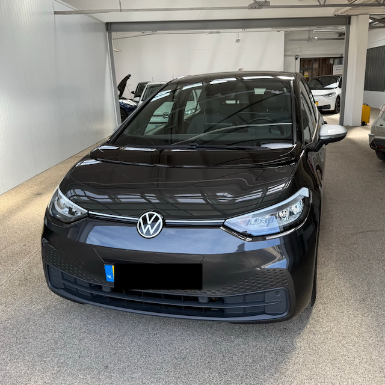

Building a Carshare

Do you want a shared car, or do you want to share your car?
I recently re-structured a car sharing group, together with 9 other people and two vehicles. I can now drive a car as much as I like for less than I would have otherwise pay to own one. It is also a nicer car than I would otherwise have been willing to afford. While there are sometimes issues with availability, these will resolve themselves as the group grows.
In the process, I designed a fee structure and incentives for our group. This was surprisingly difficult, arguably one of the largest barriers to shared mobility. To encourage more car sharing, I'd like to remove this burden from your shoulders and share my results with you.
Here is the system in short. Later, I'll go into the details of why car sharing is a good thing and why our group is designed this way.
tl;dr: Members either deposit money (becoming joint owners who set fees and policy) or pay yearly interest on a deposit to secure access. Everyone pays per kilometer driven; "regular" members also pay a monthly fee in exchange for a lower per-km rate. There are no hourly fees – availability is governed by social norms, not a booking price.
The Why
Personally, I didn't much care for cars. What I do care about is going to the mountains to hike with friends. I do want to go to the gym or to social events when the weather is bad and the busses aren't reasonable. And I would like the flexibility of looking for work away from transit or my home.
The answer to these desires is to have a car, but that want, for me, is tinged with guilt. While cars themselves can be beautiful, the roads they require are gray and lifeless, and it's impossible for me to look away from the environmental destruction of burning gasoline, shedding tire particles, and paving over forests, rivers, and meadows to build roads and parking lots.
They're also expensive, depreciating assets. Ethics aside, I don't like opening my wallet for financially dubious purchases.
Car shares, by contrast, take cars off the road and can help transition people to less-destructive electric cars.
In short, the same quirks of my values system that put me off from car ownership encouraged me to be involved with car shares.
Financial Structure
With car sharing, I drive for roughly 20% of what ownership would cost. You can expect similar savings of 40-80% depending on your region.
Members pay either deposits or interest on deposits. Some "regular" members also pay a monthly fee. All members pay a fee for the distance they drive. Fuel (gas or electric) is paid by the organization. There is no hourly fee for car use.
Our system is set to Dutch prices. The costs in your area will vary greatly. For US readers, here are rough conversions as of Summer 2026, at $1.14 per €1:
- Deposit: €2000 → $2280
- Interest on deposit (7.5%): €150 → $171
- Monthly fee (regular): €33 → ~$38
- Monthly fee (irregular): €0 → $0
- Driving cost (regular): €0.20/km → $0.37/mi
- Driving cost (irregular): €0.37/km → $0.68/mi
Deposits & Ownership
Deposits are set at €2,000 because this is slightly less than what someone might spend on a cheap car. Nicer used cars cost around €10,000, or 5 deposits.
Non-depositors still pay a yearly fee: 7.5% of the deposit price, or €150, the lowest bank-rate car loan. These fees either go into the general budget or, if needed, can be converted into an additional €2,000 deposit from a member, used to buy a car. The member then receives €150 of credit toward fees or driving. I've deposited twice, which effectively gives me an additional discount on driving.
Depositors receive their deposit back one year after the next July 1 or January 1st when they leave the group. This structure keeps depositors financially accountable: since they're joint owners, they're incentivized to keep fees sustainable and only admit safe drivers.
Monthly Fees
"Regular" members pay a monthly fee of €33. "Irregular" members drive infrequently and skip the monthly fee in exchange for a higher per-km rate, discussed below. They must still pay a deposit or interest on one to secure access.
The monthly fee covers fixed costs: insurance, regular maintenance, and excise tax. The Netherlands' monthly excise tax varies by weight and emissions, from €38 for small two-seaters to €150 for SUVs. At €33/month, regular members always pay less for shared access than they would for their own car.
Driving Fees
Regular members pay €0.20/km; irregular members pay €0.37/km. In a gas car, €0.23/km roughly covers fuel, tires, and oil changes; for our electric car, driving costs closer to €0.10/km. The surplus funds depreciation and irregular maintenance. Our one gas-powered car carries a €0.10 surcharge per km, making its driving cost €0.30/km (regular) or €0.47/km (irregular).
Gas and electricity are more expensive in the Netherlands than in most of the US, so the driving fee would likely be lower for a US-based group.
Price comparison with car ownership
Car owners tend to ignore the indirect costs that make up most of what car ownership actually costs them. Insurance and tax bills get put on autopay and forgotten. Repairs feel like unlucky, unbudgeted surprises rather than a predictable per-km cost. Depreciation is the worst-ignored of all: the cost is paid up front, but owners tend to act as if a car's value holds steady until they sell it at a loss (typically 50-70% of its value, or €7,000 lost on a €10,000 car), without ever pricing that loss in.
The result: when presented with an 80%-cheaper alternative, many car owners initially assume it must be missing something, and stick with their own car, despite it costing 300-600% more.
Our pricing model is built to make that contrast unavoidable, while staying sustainable long-term.
| Costs | Carshare Electric Car | Private Ownership of a gas car |
|---|---|---|
| Deposit vs Purchase/Lease | €2000 deposit or €150/year | €2500 (cheap used car) or €150/month (lease) |
| Monthly Fee vs Fixed Costs | €33/month | €50 (tax) + €70 (insurance) + €50 (maintenance) = €170/month |
| Driving/km | €0.20 | €0.17 (gas) + €0.03 (tires) + €0.02 (depreciation) + €0.05 (wear) = €0.27 |
| Yearly Deposit Depreciation vs Car Depreciation | None | €500+/year, or up to 70% over the car's life |
How Our Group Actually Started
Our group didn't start from scratch. We inherited an existing car share with two member-contributed cars and no deposit system. One of the two owners was leaving, partly for personal reasons, partly because the arrangement never made financial sense for him: he wasn't compensated for depreciation, was absorbing higher maintenance costs, and the inconvenience wasn't worth it. Losing him would have left the group with one aging car, which turned out to be a far more effective argument for adopting deposits than any pricing spreadsheet I could have built.
It still took about three months to get buy-in, since existing members were understandably reluctant to trade artificially low fees for a system that asked them to put money in. Three new members, myself included, joined partly because we wanted access to a newer, non-manual, non-gas car the old arrangement couldn't offer. About 60% of the original members stayed; the rest were replaced.
One frequent driver was requested not to re-join: the old system had no mechanism to address safety concerns about him, but the new depositors, now with real money on the line, did. All told, the redesign took about nine months from when I started working on it to when the new system was actually running.
Problems Once You're Running
Availability
Cars aren't available all the time, which undercuts the pitch for anyone who needs frequent or emergency access. Early on, this means underpricing membership to attract new members while the fleet is still small, a bind that only resolves as the group grows.
Solution: The budget balances if members drive somewhat more than they currently do, and a 4:1 member-to-car ratio for the first three cars is designed to make that happen: enough members to keep utilization high, but not so many that booking a car becomes a scramble. Reaching five cars should resolve availability for good, at which point the fleet is dense enough for regular commuter use.
Special-Needs Cars
People often need a car for something specific: long commutes, kids, dogs, tow hitches, distant trips, and a small shared fleet can't cover all of it at once.
Solution: We've prioritized more expensive, general-purpose vehicles first and plan to specialize later. Our electric VW ID.3 cost more than we'd have liked (€14,000), but it seats even our tallest member and can drive to nearly anywhere in the Netherlands and back on a single charge, general-purpose enough to cover most needs until the fleet is large enough to add specialized cars. A shorter-range Nissan Leaf is next, expected by early fall.
Frequent Drivers
Frequent drivers are exactly who the group needs, and some have offered extra money, usually as additional deposits, to secure more reliable access. We've struggled to price this fairly: gas costs shift month to month, and guaranteeing availability on short notice is hard regardless of what someone's willing to pay.
Solution: For members who want near-exclusive access to a specific car, we plan to offer proprietary access for an added fee: a short-term bridge until we reach five cars. Once specialty vehicles are reliably available without reservation, we expect demand for this fee to fade on its own.
These are our working bets, not proven outcomes. Feel free to check in via my contact form for updates.
Problems Before You Start
Existing Car Sharing
The first problem you're likely to face is competition from private owners sharing their cars for below-market rates. No one wants to join a car share if their neighbor will let them drive for the cost of gas.
The ideal solution is getting private owners to band together into a group. A more realistic one is showing them what they're actually paying versus what they're charging, and asking them to raise their rates. (We're in the process of convincing one such owner to sell us his car; the neighbor who's been borrowing it would likely have to join as a member.)
Existing commercial car-sharing services in our area, by contrast, haven't been much competition. They tend to feel expensive and inconvenient: the companies here charge €0.40 to €0.80/km, €2 to €8/hour, and €0 to €50/month, with too few cars per member, often parked in scattered, hard-to-predict spots. Much of that cost disparity comes down to financing. Our group buys used cars, which keeps capital requirements low, and our deposit system means we finance them at 0% interest. Commercial services work with new or third-party leased cars and have to pass those higher financing costs on to drivers.
Who actually joins a car share (and who doesn't)
There's a predictable set of user flows that work against car shares, and understanding them explains why the people who join are a narrower group than the price advantage alone would suggest.
- People who have money and want a car just buy one. The car share's cost advantage doesn't register if ownership was never a financial question for them.
- People who can't comfortably afford a car experience sticker shock at car-share pricing, since deposits and monthly fees are visible costs while the true cost of ownership is not. Not understanding the indirect costs they'd otherwise be paying, they often buy a "cheap" car anyway. This is, sadly and invariably, more expensive than sharing one.
- People who only rarely need a car default to asking a neighbor for a favor, and have little reason to organize anything more formal.
At the moment any of these people buy a car, they stop being a candidate for your group. What's left is a smaller, more specific pool: people who are ideologically motivated (they care about the environmental) or financially motivated (ownership genuinely isn't in reach).
This is who is left standing once the easier options are exhausted. It also means the time commitment of building a group falls on a self-selected few: it took about three months to for me get buy-in from our existing members, and nine months from when I started redesigning the system to when it was actually running on the new terms. If you're doing this alongside a full-time job, plan for that timeline rather than a weekend project.
How to Start a Car Share
In practice, many car-sharing groups begin with one or two people sharing personal vehicles, and dissolve when the owners realize they're not being compensated for depreciation or upkeep. Ours nearly did – one of the two original owners in my group left for exactly this reason.
The best way to build a sustainable group is to find people who are ideologically or financially motivated, and to make the true cost of ownership clear before anyone starts splitting costs. In practice, forcing events are more effective than spreadsheets and persuasion. Our transition to deposits happened not because members were convinced by a pricing argument, but because losing a car made the alternative (one aging vehicle, or none) unavoidably worse than paying in.
If you're a car owner who wants to help your community, the most direct path is to offer your neighbors a pricing structure that works for them (see above), pool cars with another owner, and eventually "sell" your car to the group while continuing to use it.
If you don't own a car, your path is harder, but not closed. Buying one and building a pool around it is the most direct route. Failing that, look for an existing group, even an informal one between neighbors, and offer to join as a paying member; the existence of even one motivated newcomer is often what pushes a shaky arrangement toward a real structure.
Summary
Do you want a shared car, or do you want to share your car? Either path gets you there, but the second one is harder to walk alone. If you want to start a car share, the main obstacles you'll face are finding people, finding a car, and building a pricing structure that survives contact with reality. I hope this post helps with all three. The numbers, at least, are now yours to steal.
Good luck, and let me know how it goes through my contact form.